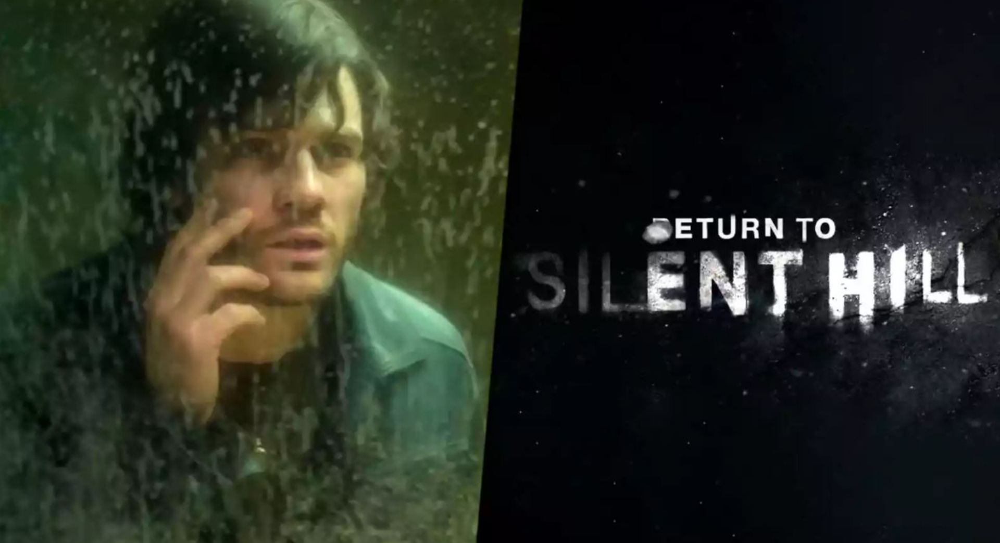

Novedades Silent Hill
¡YA SALIÓ SILENT HILL 2 REMAKE!
La niebla vuelve a cubrir Silent Hill… y con ella, todos los recuerdos que jamás debieron despertar.

Después de años de silencio, Silent Hill 2 Remake finalmente llega para revivir una de las historias más inquietantes del horror psicológico. El clásico que marcó a toda una generación regresa con gráficos completamente renovados, una ambientación más oscura y perturbadora, y un sonido que late como una pesadilla constante en los oídos del jugador.
El remake nos invita nuevamente a caminar junto a James Sunderland, quien, tras recibir una carta de su esposa fallecida, se adentra en la ciudad maldita para buscar respuestas que quizá nunca quiso conocer. Cada paso entre la niebla se siente más pesado… cada sombra parece observar… cada rincón oculta una verdad que lastima.
Los monstruos han vuelto, más deformados y simbólicos que nunca, y Pyramid Head continúa imponiendo una presencia brutal e inolvidable. El Hospital Brookhaven, el Hotel Lakeview, las sirenas, los ecos del pasado… todo ha sido reconstruido para que el terror psicológico duela más hondo.
Este regreso no es solo una mejora gráfica:
es una invitación a enfrentar la culpa, el dolor, el castigo y el miedo.
Silent Hill 2 Remake ya está disponible, esperando a los valientes que se atrevan a abrir la puerta y entrar en la oscuridad nuevamente.
¡NUEVA COLABORACIÓN SILENT HILL X DEAD BY DAYLIGHT!
La niebla no se queda solo en Silent Hill… también ha llegado al Reino de la Entidad.

Dead by Daylight presenta una nueva colaboración con Silent Hill 2, trayendo de regreso a algunos de los personajes y elementos más icónicos del terror psicológico. Los jugadores ahora podrán sumergirse en una experiencia donde la desesperación y la persecución se mezclan en un mismo juego.
Entre los añadidos más esperados, Pyramid Head vuelve a ocupar un rol protagónico como asesino, portando su enorme cuchilla arrastrada contra el suelo, lista para castigar a quien ose enfrentarlo.
Pero la oscuridad no llega sola: James y María también forman parte de este cruce aterrador como sobrevivientes seleccionables, cargando consigo el peso de su historia y los secretos que los atormentan.
El mapa del Midwich Elementary School luce renovado, aún más opresivo, laberíntico y lleno de simbolismos que los fans de Silent Hill reconocerán de inmediato. Gritos metálicos, sirenas lejanas y paredes corroídas por el otro mundo crean el ambiente perfecto para la cacería.
Esta colaboración es un homenaje vivo al legado de Silent Hill 2. Una unión de dos pesadillas que no dan respiro. Porque aquí, no importa si corres o te escondés…
¡YA SALIÓ EL TRÁILER DE RETURN TO SILENT HILL!
Return to Silent Hill: el horror llega al cine nuevamente
La pesadilla toma forma en la gran pantalla. Return to Silent Hill es la nueva adaptación cinematográfica inspirada directamente en la historia de Silent Hill 2, y promete devolver el verdadero terror psicológico que hizo de la saga un clásico inolvidable.
La película está dirigida por Christophe Gans, quien ya estuvo detrás de la primera adaptación del 2006, y ahora vuelve para ofrecer una visión más fiel, más oscura y más emocional del viaje de James Sunderland hacia la ciudad cubierta por la niebla.
James, atormentado por la pérdida de su esposa, recibe una misteriosa carta que lo obliga a enfrentarse a su pasado dentro de un pueblo donde la realidad se quiebra y los pecados toman forma física. Monstruos deformados, callejones húmedos, el sonido metálico de la sirena… todo regresa para atormentar tanto al protagonista como al espectador.
El aspecto visual del film busca honrar la estética del remake: niebla densa, luces apagadas, pasillos oxidados y criaturas que parecen surgir de los rincones más profundos de la culpa humana. Pyramid Head, por supuesto, regresa como la figura de terror más reconocida del universo Silent Hill.
Return to Silent Hill es una experiencia pensada para quienes crecieron con el juego original… y para quienes nunca se atrevieron a entrar al pueblo hasta ahora.